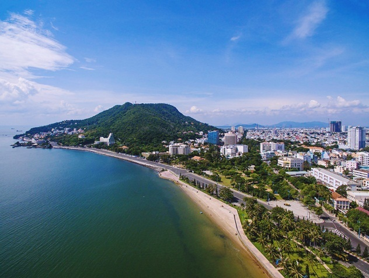

HELLO, IT'S NICE TO MEET YOU

Bà Rịa-Vũng Tàu là một tỉnh ven biển nằm ở miền Đông Nam Bộ Việt Nam, có vị trí chiến lược và là một trong những địa điểm du lịch hấp dẫn của đất nước.
Tỉnh này có địa hình đa dạng với những bãi biển trải dài, các địa danh nổi tiếng và một cộng đồng đa dạng về văn hóa.
Bãi biển là điểm nổi bật của Bà Rịa-Vũng Tàu, với các bãi cát trắng dài, nước biển trong xanh và bãi biển nổi tiếng như Hồ Cốc, Bãi Trước,
Bãi Sau, Long Hải. Đây là nơi thu hút rất nhiều du khách trong và ngoài nước đến tham quan,
nghỉ dưỡng và tham gia các hoạt động thể thao biển như lướt sóng, lặn biển, đi thuyền kayak.
Ngoài ra, Bà Rịa-Vũng Tàu còn có những địa điểm du lịch nổi tiếng khác như Mũi Né, núi Lớn, núi Nhỏ, Hòn Bà, hòn Bạch Đằng...
Đây là những điểm đến hấp dẫn cho những ai yêu thích khám phá thiên nhiên hoang sơ và thư giãn trong không gian yên bình của biển đảo.
Ẩm thực Bà Rịa -Vũng Tàu cũng là động lực hấp dẫn đối với du khách bởi hương vị độc đáo, cách chế biến vô cùng khác biệt. Hãy cùng tạp chí Travelive điểm danh những món ngon bạn “nhất định phải thử” khi đến với địa danh nổi tiếng này nhé!
Bánh Khọt là món ăn cực kỳ nổi tiếng không chỉ ở BRVT mà nó đã đạt kỷ lục giá trị ẩm thực Châu Á - bạn sẽ dễ dàng tìm thấy những điểm để thưởng thức món ăn này tại đây,
trong đó có một số địa chỉ nổi tiếng được truyền danh như Bánh Khọt Cô Ba số 01 Hoàng Hoa Thám , Bánh Khọt Gốc Vũ Sữa…
Chỉ cần một lần đặt chân đến mảnh đất Bà Rịa-Vũng Tàu, mọi du khách đều sẽ bị mê hoặc bởi thiên nhiên núi rừng hùng vĩ, con người thân thiện và nhiều món ăn hấp dẫn.
Và điều mà nhiều du khách cảm thấy tò mò nhất chắc hẳn là đặc sản Bà Rịa-Vũng Tàu phải không nào? Vậy vùng đất này có những món ăn nào có thể khiến du khách hấp dẫn đến như vậy!
Hãy để VN Foods giúp bạn hiểu hơn về văn hoá ẩm thực nơi đây nhé!